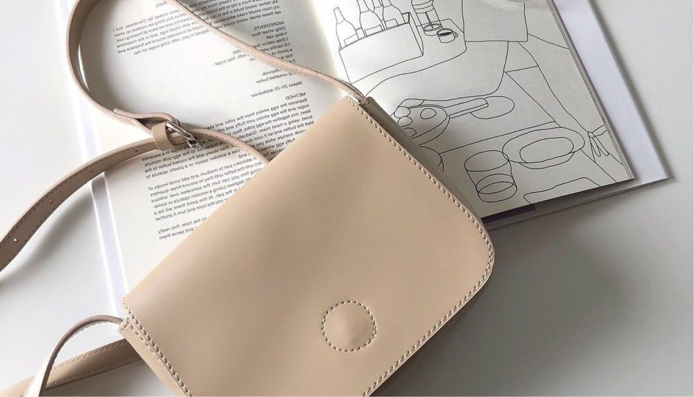

Лайфхаки
Уход за сумками
Сумки являются важной составляющей осознанного потребления.
Использование многоразовых сумок из экологически чистых
материалов, таких как хлопок или джут, позволяет избежать
использования одноразовых пластиковых сумок, которые загрязняют
окружающую среду. Помимо этого, сумки с уникальным дизайном
и надписями о сознательном потреблении могут служить
напоминанием о важности экологического образа жизни
и привлекать внимание к этой проблеме. Использование
многоразовых сумок также помогает сократить отходы
и приводит к более устойчивому будущему.
Регулярный уход за сумками, не только продлевает их срок
службы, но и сохраняет их внешний вид
и функциональность.
Сумки — неотьемлемая часть нашей повседневной жизни.
Они помогают нам переносить наши вещи и могут служить
стильным аксессуаром. Однако, мало кто задумывается о том,
как правильно ухаживать и хранить сумки, чтобы они служили
дольше. В этой статье мы собрали лайфхаки, которые
помогут вам осознанно использовать обувь, сохранить
ее красоту и увеличить ее срок службы.

 Список основных правил
Список основных правил
Храните сумки в мешках из хлопка или ткани. Это
поможет сохранить форму сумки и защитит ее от пыли
и грязи.
Если ваша сумка из кожи, регулярно наносите на нее
специальное средство для ухода за кожей. Это поможет
сохранить ее эластичность и мягкость.
Если вы путешествуете, используйте сумки-органайзеры. Они
помогут организовать пространство внутри сумки и защитят
содержимое от повреждений.
Не нагружайте сумку сверх меры. Это может привести
к потере формы.
Периодически чистите свою сумку. Если она из ткани, можно
вытереть ее влажной губкой. Если из кожи, используйте
специальный очиститель.
Храните сумки в сухом месте, чтобы избежать плесени
и появления запаха.